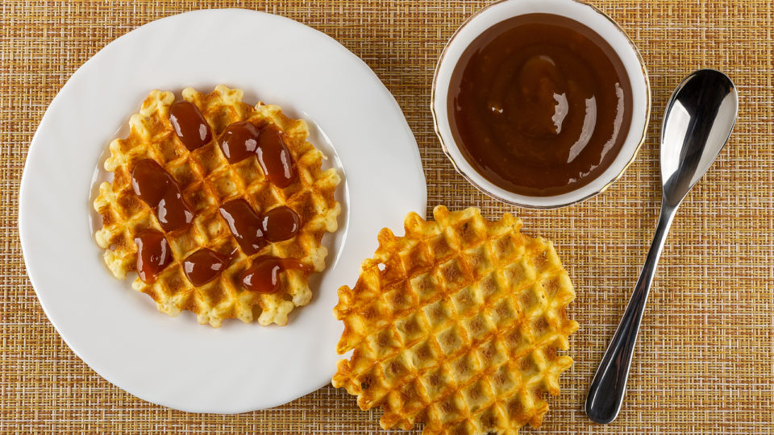

INGREDIENTES
- 2 xícaras (chá) de farinha de trigo
- 2 colheres (chá) de fermento em pó
- 2 colheres amido de milho
- 4 colheres (sopa) de manteiga sem sal derretida
- 1 colher (sopa) de essência de baunilha
- 2 colher (sopa) de açúcar
- 1/2 colher (chá) de sal
- 3 ovos batidos
- 1 e 3/4 de xícara (chá) de leite
MODO DE PREPARO
- Peneire em um recipiente a farinha de trigo, o açúcar, o amido, o fermento e o sal. Reserve.
- Em outro recipiente misture os ovos batidos com o leite, a manteiga derretida e a essência de baunilha.
- Despeje sobre a mistura de farinha e rapidamente incorpore os ingredientes.
- Aqueça o aparelho para Waffles. Coloque uma concha rasa de massa e espalhe até cobrir o molde do aparelho, feche a tampa e deixe assar até a massa ficar bem dourada.
- Retire com espátulas de silicone. Sirva com mel, frutas ou geleia.